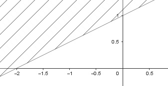
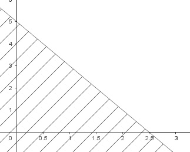

Aufgabe 63 Zeichnen Sie die Graphen der Ungleichungen: a) y ≥ 0,5x + 1 b) y ≤ - 2x + 5 a) Randgerade: y = 0,5x + 1 gehört zur Lösungsmenge Halbebene: y ≥ 0,5x + 1

b) Randgerade: y = -2x + 5 gehört zur Lösungsmenge Halbebene: y ≤ -2x + 5